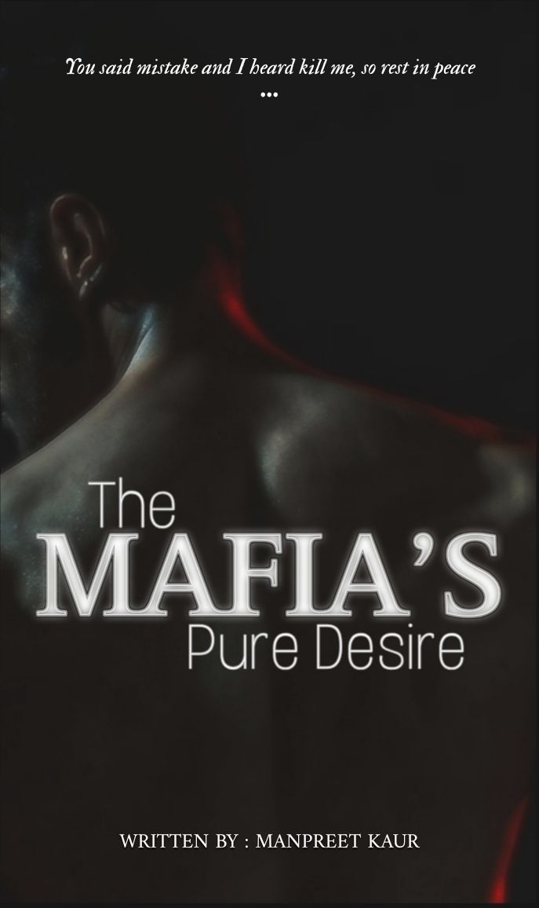
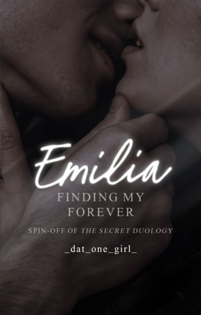
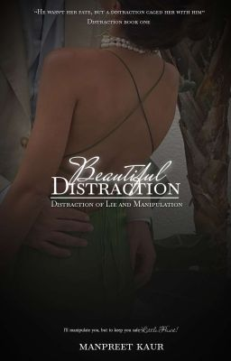
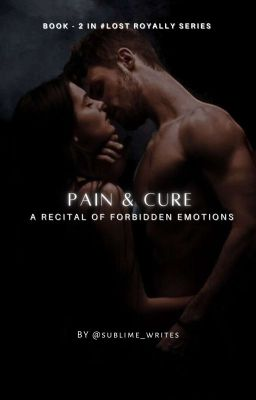

@manupreet
❛You all must have heard that a ray of light is definitely visible in the darkness which takes us towards light. But what if instead of light the devil is seen in the darkness?❜ ✧ AVAYAN SINGH RATHORE, A twenty eight years old handsome, but arrogant and short tempered man. Apart from anger he has no other emotion. For everyone he is the chair person of 'Rathore Group of Construction', but in actuall he is a Mafia King, The Mad Wolf, whose name is enough to make the
Start ReadingMay require VPN in some regions

@_dat_one_girl_
𝐅𝐫𝐨𝐦 𝐄𝐧𝐞𝐦𝐢𝐞𝐬 𝐭𝐨 𝐋𝐨𝐯𝐞𝐫𝐬 She wants freedom, he craves control - but when their families force them into marriage, their union becomes a dangerous game of power, passion, and betrayal. ... Emilia, a mixture of Enzo and Elianna. She isn't afraid of anyone and is a headstrong force to be reckoned with. For most of her life, Emilia had only had two goals in mind: attaining her degree and finding her forever. Santo, a mixture of darkness and cruelty. He loves to be in control
Start ReadingMay require VPN in some regions

@Manupreet
#BOOK ONE OF DISTRACTION SERIES '𝐁𝐞𝐚𝐮𝐭𝐢𝐟𝐮𝐥 𝐃𝐢𝐬𝐭𝐫𝐚𝐜𝐭𝐢𝐨𝐧 : 𝐃𝐢𝐬𝐭𝐫𝐚𝐜𝐭𝐢𝐨𝐧 𝐨𝐟 𝐋𝐢𝐞 𝐚𝐧𝐝 𝐌𝐚𝐧𝐢𝐩𝐮𝐥𝐚𝐭𝐢𝐨𝐧' or may be love. She was led astray by him but still she fell more and more madly for him. ✧ I saw a man was brutally stabbing two people one by one on the road. He killed two people in front of my eyes. Seeing this horrifying sight before my eyes, my soul trembled, my body became cold as if I was not alive. There were some men around him, but no one was even trying to stop him. Who is this man and why is he killing them so brutally? And suddenly he stabbed his victim right in the middle of the neck, seeing which I screamed, "Ahhhh!" It was going to prove to be my biggest mistake, he turned his gaze towards me and stood up from his place. He started moving towards me while wielding the knife. It seemed as if I had become frozen, neither was I able to move nor was I able to react. His hands were stained with blood, there were blood stains on his face too. He was slowly taking his steps towards me, but I was not able to even move from my place. I could clearly see my death in his scarier eyes. I understood that within a few moments I too would meet the same fate as those two people. As soon as he reached me, he extended his blood soaked hand towards me, I was scared to death and immediately took a few steps back. He smirked and took as many steps forward. He extended his hand towards me again and said softly in his heavy voice, "Will you marry me?" ✧ The story of two entangled souls, will they be able to sort themselves out or become even more entangled with each other? Arshveer Singh Randhawa × Amber Williams
Start ReadingMay require VPN in some regions

@Sublime_writes
#Book-2 in Lost Royalty series ( CAN BE READ STANDALONE ) He is heartless, While she is a heart specialist He kills mercilessly, And she lives to save lives Both are accustomed to blood, but with different intentions: One to give back life, the other to snatch lives In the collision of their paths, will they find a way to reconcile their differences or remain irreconcilable opposites? What will happen when destiny plays its game, binding them in a knot of marriage of
Start ReadingMay require VPN in some regions